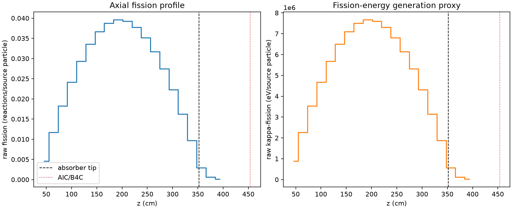
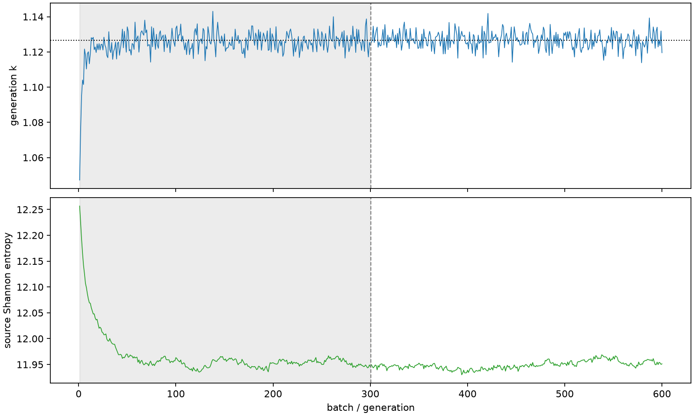

| field | value |
|---|---|
| experiment | V2-STAGE_256_OGRENCI_03-0001 |
| k | 1.1267105812202396 |
| MC standard error | 0.00017623522603438488 |
| seconds | 969.130143685994 |
| acceptance | not_assessed |
| convergence | review_required |
Completed is output integrity only; physical and statistical review required. Zero tallies do not prove zero production or zero uncertainty.
| diagnostic | value |
|---|---|
| geometric fuel voxels | 5280 |
| zero fission tally voxels | 0 |
| low signal fuel voxels | 0 |
| low signal fission share | 0.0 |
| low signal kappa share | 0.0 |
| important fission share | 0.9500496429011486 |
| previous filter included | 5280 |
| duration estimate s | 1562.5173488400023 |
| actual minus estimate s | -593.3872051540084 |
| fission relative MC error | statistics |
|---|---|
| all_geometric_fuel | {"voxels": 5280, "positive_mean_voxels": 5280, "zero_mean_voxels": 0, "undefined_relative_error_voxels": 0, "median": 0.010203373108307696, "p95": 0.08029684334622475, "maximum": 0.19837355127026374} |
| low_signal | {"voxels": 0, "positive_mean_voxels": 0, "zero_mean_voxels": 0, "undefined_relative_error_voxels": 0, "median": null, "p95": null, "maximum": null} |
| important_95pct | {"voxels": 3843, "positive_mean_voxels": 3843, "zero_mean_voxels": 0, "undefined_relative_error_voxels": 0, "median": 0.009209317506533761, "p95": 0.01361116300737224, "maximum": 0.016356570083344176} |
| outside_previous_filter | {"voxels": 0, "positive_mean_voxels": 0, "zero_mean_voxels": 0, "undefined_relative_error_voxels": 0, "median": null, "p95": null, "maximum": null} |
| kappa_fission relative MC error | statistics |
|---|---|
| all_geometric_fuel | {"voxels": 5280, "positive_mean_voxels": 5280, "zero_mean_voxels": 0, "undefined_relative_error_voxels": 0, "median": 0.010190805800056333, "p95": 0.08018125637390953, "maximum": 0.19811695847280827} |
| low_signal | {"voxels": 0, "positive_mean_voxels": 0, "zero_mean_voxels": 0, "undefined_relative_error_voxels": 0, "median": null, "p95": null, "maximum": null} |
| important_95pct | {"voxels": 3843, "positive_mean_voxels": 3843, "zero_mean_voxels": 0, "undefined_relative_error_voxels": 0, "median": 0.009198631375243968, "p95": 0.013593863552147752, "maximum": 0.016336899989481953} |
| outside_previous_filter | {"voxels": 0, "positive_mean_voxels": 0, "zero_mean_voxels": 0, "undefined_relative_error_voxels": 0, "median": null, "p95": null, "maximum": null} |
| axial bin | fission share | kappa-fission share |
|---|---|---|
| 1 | 0.010029669429304425 | 0.01003017885063408 |
| 2 | 0.025383791950766985 | 0.0253837453629507 |
| 3 | 0.03965686295191434 | 0.03965677126761455 |
| 4 | 0.0524863043786778 | 0.0524861606461035 |
| 5 | 0.06382974780341036 | 0.06382952863388122 |
| 6 | 0.07292433311180391 | 0.07292416809558917 |
| 7 | 0.07975491362760495 | 0.07975469710737375 |
| 8 | 0.08433793397868142 | 0.08433743299562786 |
| 9 | 0.08607521709363765 | 0.08607505567284385 |
| 10 | 0.08540239719799286 | 0.08540241838648435 |
| 11 | 0.08207902504458887 | 0.08207912448929112 |
| 12 | 0.07651892397900138 | 0.07651881775326563 |
| 13 | 0.0689669161637304 | 0.06896673385000412 |
| 14 | 0.059631693553360406 | 0.059631363343026676 |
| 15 | 0.04850886852068892 | 0.04850856901099865 |
| 16 | 0.035375282676807875 | 0.03537516316241117 |
| 17 | 0.021057181351531236 | 0.02105721126953112 |
| 18 | 0.006353960796387315 | 0.00635523950021589 |
| 19 | 0.0013516572495005706 | 0.0013521690342194915 |
| 20 | 0.00027531914060835005 | 0.0002754515679330311 |
Histories include the inactive-to-active transition at batch 300. kappa-fission approximates fission energy production, not total heat deposition.

